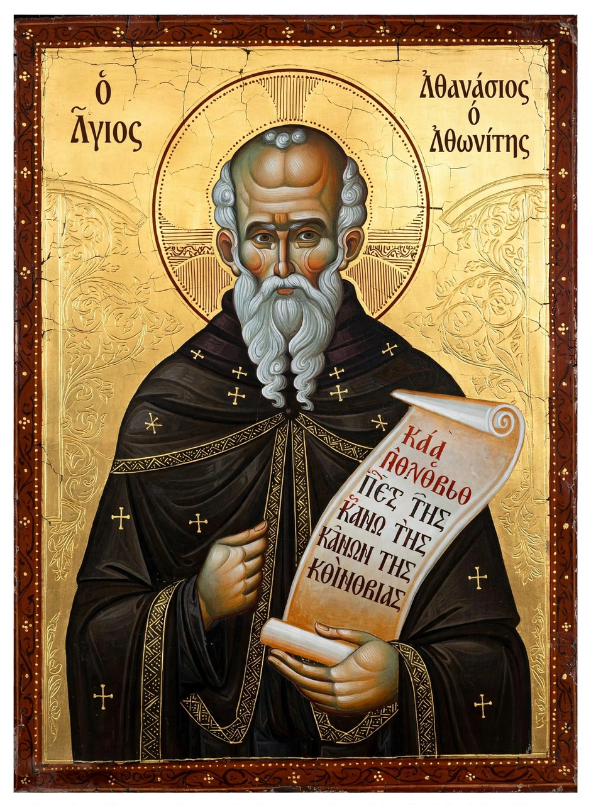

From Wikipedia, the free encyclopedia

| Athanasius the Athonite | |
|---|---|
| Born | c. 920, Trebizond (Byzantine Empire) |
| Died | c. 1000, Mount Athos |
| Feast day | 5 July |
| Known for | Founding the Great Lavra; organising monastic life on Mount Athos |
Athanasius the Athonite (Greek: Ἀθανάσιος ὁ Ἀθωνίτης; c. 920 – c. 1000), also called Athanasius of Trebizond, was a Byzantine monk and saint who founded the Great Lavra monastery on Mount Athos in 963 and is credited with organising the monastic community of the "Holy Mountain" that endures in the Eastern Orthodox world to this day.
Born in Trebizond under the name Abraamios, he was educated in Constantinople and became a successful teacher before renouncing the world to join the monk Michael Maleinos at the monastery of Mount Kyminas in Bithynia. Longing for a stricter solitude, he withdrew about 958 to Mount Athos, then inhabited only by scattered hermits. There his friend and patron, the general Nikephoros Phokas — soon to become emperor Nikephoros II — financed the building of the Great Lavra, the first great cenobitic monastery on the peninsula, dedicated in 963.
Athanasius composed a typikon (rule) for the Lavra, blending the cenobitic traditions of the Stoudion monastery and of Saint Basil with the eremitic customs of the Mountain. His reforms were resisted by the established hermits, and tradition records two attempts on his life; nevertheless imperial protection secured the community, and the Lavra became the model and senior house of Athonite monasticism. He died around the year 1000, reportedly killed when a dome under construction in the monastery's church collapsed during an inspection. His feast day is 5 July.